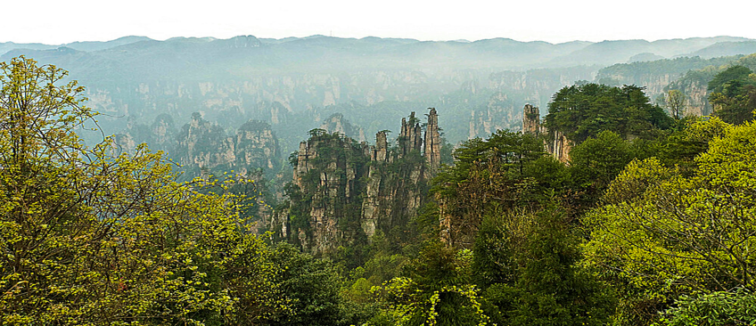

⇪
Wulingyuan covers 3 natural reserves, and contains over 500 tree species, including dawn redwood, believed extinct until it was re-identified in 1948. There are also giant salamanders, rhesus monkeys, and many bird types. The monkeys have become accustomed to human visitors, and have been known to grab white plastic shopping bags from visitors to look for food.
The main highlight is following the many paths through the stunning sandstone landscape. Some paths are short and easy, while others are long and involve hundreds of meters of exhausting climbing. The main sights are easily reachable from the bus stops but walkways will be clogged with tourist. As soon as you venture out to a 'minor' track, you'll be alone.
IMPORTANT UPDATE:
Wulingyuan is the name of one of the parks that make up the "Zhangjiajie Scenic Area". It is also the name of a city/district on the eastern side of the park which has numerous guesthouses, hotels and restaurants.
Xianren Qiao (Bridge of the Immortals) This spectacular, narrow rock bridge is over a deep chasm, with no railings. Access to the bridge is blocked by barbed wire, but some daredevils choose to walk over it anyway. There are several amazing look-out points you can walk to nearby, including "Great Viewing Platform," "Emperor's Throne" and "Cock-Pecking."